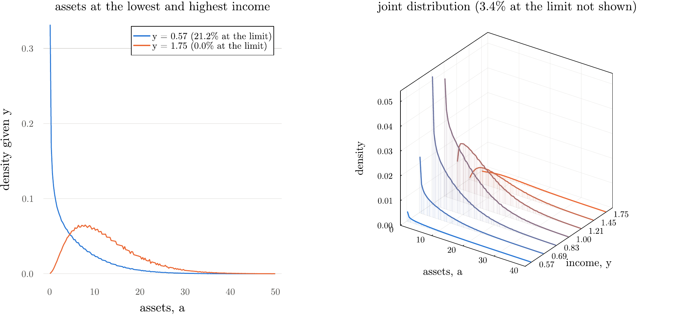
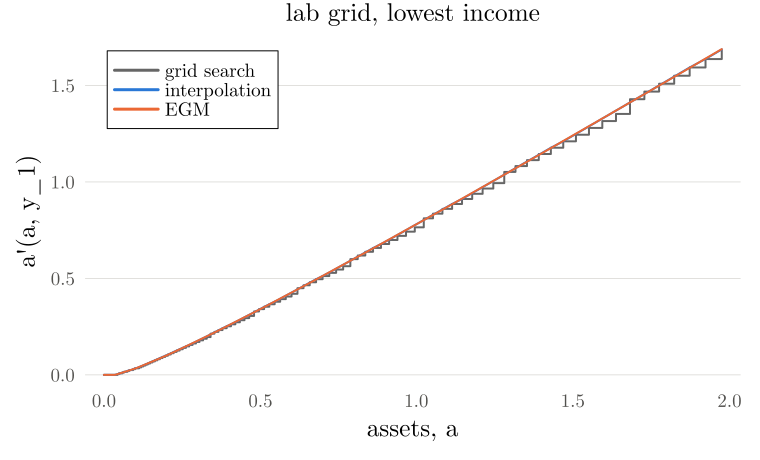

EC991 Topics in Macroeconomics · Week 4 Lab
Week 3's package solved the household problem at a given interest rate. This week's package finds the interest rate. The equilibrium loop is written once, and only the household step changes.
In VS Code, open your EC991 folder and choose Pull in the Source Control pane, or from a terminal:
cd EC991 # wherever you cloned it in week 1
git pullA new folder appears next to week03:
EC991/
└── week04/
└── lab/
├── week04_lab.jl # the Pluto notebook
├── week04_code_guide.html # this page
└── EC991Week4/ # the package: all the code
├── Project.toml, Manifest.toml, README.md
├── src/
├── run/
└── test/Then copy the whole lab folder into your own repository and commit it, as in earlier weeks. The notebook finds the package through the folder next to it, so keep the two side by side.
cp -R EC991/week04/lab ec991-work/week04Copy-Item -Recurse EC991\week04\lab ec991-work\week04the folder ec991-work/week04/EC991Week4 exists and git log --oneline -1 in ec991-work shows your commit.
The lecture's algorithm has six steps, and only Step 3 depends on how you solve the household problem. Every method hands the same object to Step 4: the saving policy (slide 29). So you choose the method with one word:
eq = solve_equilibrium(Economy(); method = :vfi_grid) # no interpolation
eq = solve_equilibrium(Economy(); method = :vfi_interp) # interpolate V, then optimise
eq = solve_equilibrium(Economy(); method = :egm) # invert the Euler equationmethod = | What it does | What is interpolated |
|---|---|---|
:vfi_grid | VFI, trying every grid point (week 3) | nothing: $a'$ stays on the grid |
:vfi_fast | the same, with monotonicity, concavity and Howard | nothing |
:vfi_interp | VFI, interpolating $V$ and optimising with Brent (week 3) | $V$, so $a'$ can leave the grid |
:vfi_interp_howard | the same, with Howard | $V$ |
:egm | the endogenous grid method | the saving policy, back onto the grid |
The package still uses no packages beyond Plots.
The rules are the same: src/ never plots or prints, run/ holds no model logic, test/ checks against known answers. Week 3's files are all here, unchanged apart from two small additions: solve_vfi takes a starting value and Howard's updates, and compare_policies can ignore the top of the grid. The new files, with slide numbers from the week 4 lecture:
| File | What it holds | Slides |
|---|---|---|
vfi_speedups.jl | bellman_step_fast!, howard_update! | 5, 6 |
egm.jl | egm_step!, solve_egm | 8 to 14 |
euler_errors.jl | euler_error, euler_errors | 18, 19 |
distribution.jl | young_weights, policy_on_grid, build_Q, stationary_distribution, absorbing_states | 20 to 25 |
simulate.jl | simulate_panel: Monte Carlo | 20 |
equilibrium.jl | Economy, setup, capital_demand, solve_household, excess_demand, solve_equilibrium | 27 to 30 |
statistics.jl | model_stats, mpc, conditional_density, joint_table | 26, 32, 33 |
bellman_step_fast! (slide 6)Week 3's bellman_step!, with two shortcuts. If $k^*$ is the best choice at $a_{i-1}$, the search starts there:
function bellman_step_fast!(V1, pol, V0, hh::Household, a, y, P)
(; β, R, w) = hh
# EV[k, j]: the expected value of V0 at a_k, given income y_j today
EV = V0 * P'
n_a, n_y = length(a), length(y)
# one income today at a time
for j in 1:n_y
kstart = 1 # monotonicity: the lowest choice still possible
# work up the asset grid at this income
for i in 1:n_a
# the best value so far, and the index of the choice that gave it
best, kbest = -Inf, kstart
# try the choices a_k, from the previous state's best upwards
for k in kstart:n_a
c = R * a[i] + w * y[j] - a[k]
c <= 0 && break # consumption only falls with k
v = utility(c, hh) + β * EV[k, j]
v < best && break # concavity: the first fall is past the peak
best, kbest = v, k
end
# store the new value and the index of the best choice
V1[i, j], pol[i, j] = best, kbest
# the next, richer state starts its search here
kstart = kbest
end
end
return V1, pol
endThe two lines that do the work:
| Code | Why |
|---|---|
for k in kstart:n_a | monotone policy: start at the previous state's best choice |
v < best && break | concave objective: the first fall is past the peak |
howard_update! (slide 5)Hold the policy fixed and update the value $n_H$ times with no maximisation:
$$W^{k+1}_{ij} = u\big(R a_i + w y_j - g_{ij}\big) + \beta \sum_m P_{jm} W^k\big(g_{ij}, y_m\big).$$
function howard_update!(W, pol::Matrix{Int}, hh::Household, a, y, P; n_H, interp = :linear)
(; β, R, w) = hh
# utility under the fixed policy: it never changes, so compute it once
U = [utility(R * a[i] + w * y[j] - a[pol[i, j]], hh) for i in eachindex(a), j in eachindex(y)]
# empty matrix to hold the expectation
EV = similar(W)
# n_H cheap updates, with no maximisation
for _ in 1:n_H
# EV = W * P', written into the existing matrix
mul!(EV, W, P')
for j in eachindex(y), i in eachindex(a)
# utility today + discounted expected value at the fixed choice
W[i, j] = U[i, j] + β * EV[pol[i, j], j]
end
end
return W
endThe utility term is computed once. With the policy on the grid, the expectation is one matrix product and one look-up. solve_vfi always measures the distance across a maximisation, so tol means the same with and without Howard.
Move on to Part 6 and return to this part at the end.
Week 3's bellman_step_interp! is unchanged. Howard's update reads $W^k$ at the off-grid choice by interpolating the column EV[:, j]. That gives the same number as interpolating each column of $W$ and weighting by $P_{jm}$, because both interpolants are linear in the stored values.
Off the grid, the expectation is read from an interpolant $\hat E_j$, which passes through the values $\sum_m W^k_{im} P_{jm}$ at each $a_i$:
$$W^{k+1}_{ij} = u\big(R a_i + w y_j - g_{ij}\big) + \beta\, \hat E_j\big(g_{ij}\big).$$function howard_update!(W, apol::Matrix{<:AbstractFloat}, hh::Household, a, y, P; n_H, interp = :linear)
(; β, R, w) = hh
# choose the interpolant: linear or cubic spline
build = interp === :linear ? LinearInterp : interp === :cubic ? CubicSpline :
throw(ArgumentError("interp must be :linear or :cubic"))
# utility under the fixed policy: it never changes, so compute it once
U = [utility(R * a[i] + w * y[j] - apol[i, j], hh) for i in eachindex(a), j in eachindex(y)]
# empty matrix to hold the expectation
EV = similar(W)
# n_H cheap updates, with no maximisation
for _ in 1:n_H
# EV = W * P', written into the existing matrix
mul!(EV, W, P')
for j in eachindex(y)
# the expectation at this income, as a function of a'
Ê = build(a, EV[:, j])
for i in eachindex(a)
# read the expectation at the off-grid choice apol[i, j]
W[i, j] = U[i, j] + β * Ê(apol[i, j])
end
end
end
return W
endapol[i, j] is the chosen $a'$ itself, so this method runs when the policy is off the grid. Julia picks the method from the type of the policy.Ê is rebuilt at each update, once per income today, because EV has changed.Far from the solution, Howard can fail to converge. Linear interpolation puts kinks in the objective and Brent assumes one peak, so the policy can jump between sweeps, and Howard then evaluates a poor policy many times. So the keyword howard_from runs ordinary steps, which are a contraction, until the distance is below it. :vfi_interp_howard uses 0.01. Grid search maximises exactly, so :vfi_fast does not use it. In solve_vfi:
# run Howard only if the distance is below howard_from and the lowest so far
if d < d_best && d < howard_from
d_best = d
# evaluate the current policy n_H times, updating V1 in place
n_H > 0 && howard_update!(V1, pol, hh, a, y, P; n_H, interp)
endHoward also runs only when the distance is the lowest so far.
Read each grid point as tomorrow's assets $a'_i$ (slides 12 to 14). Then nothing on the right-hand side of the Euler equation is unknown:
$$\text{RHS}(a'_i, y_j) = \beta R \sum_m P_{jm}\, u'\big(g^n_c(a'_i, y_m)\big), \qquad \tilde c = u'^{-1}\big(\text{RHS}(a'_i, y_j)\big), \qquad \hat a_i = \frac{\tilde c + a'_i - w y_j}{R} .$$This is egm_step!:
function egm_step!(c1, apol, c0, hh::Household, a, y, P)
(; β, γ, R, w) = hh
# read a[i] as tomorrow's assets: row i of EMU is the choice a'_i
EMU = marginal_utility.(c0, γ) * P' # EMU[i, j] = Σ_m P[j, m] u'(c0[i, m])
# empty vector for the generated assets at one income
â = similar(a)
# one income today at a time
for j in eachindex(y)
# each grid point is a choice of tomorrow's assets
for i in eachindex(a)
# invert the Euler equation: consumption today, with no root finder
c̃ = inverse_marginal_utility(β * R * EMU[i, j], γ)
# budget constraint: the assets today that lead to this a'
â[i] = endogenous_assets(c̃, a[i], w * y[j], R)
end
ĝ = LinearInterp(â, a) # a' as a function of today's assets
# back on the grid: a[i] now means today's assets
for i in eachindex(a)
apol[i, j] = max(ĝ(a[i]), a[1]) # the borrowing constraint (slide 14)
# consumption from the budget constraint
c1[i, j] = R * a[i] + w * y[j] - apol[i, j]
end
end
return c1, apol
endLine by line:
| Code | Maths |
|---|---|
EMU = marginal_utility.(c0, γ) * P' | $\sum_m P_{jm}\, u'(g^n_c(a'_i, y_m))$ for every $i, j$ |
inverse_marginal_utility(β * R * EMU[i, j], γ) | $\tilde c = u'^{-1}(\text{RHS}(a'_i, y_j))$ |
endogenous_assets(c̃, a[i], w * y[j], R) | $\hat a_i = (\tilde c + a'_i - w y_j) / R$ |
ĝ = LinearInterp(â, a) | the policy through the pairs $(\hat a_i, a'_i)$ |
max(ĝ(a[i]), a[1]) | the borrowing constraint (slide 14) |
R * a[i] + w * y[j] - apol[i, j] | consumption from the budget constraint |
The worked number on slide 10 is a test: endogenous_assets(1.5, 2.0, 1.0, 1.02) returns $2.451$.
EGM takes about as many iterations as plain VFI (319 against 295 on the lab grid). The gain is the cost per iteration: no search, one matrix product and one interpolation per income state. It has no value function, so sol.V is nothing.
At very high assets the saving policy can come out just above the top of the grid (250.15 at the highest income on the dense grid). This does no harm inside EGM, where the grid only ever holds tomorrow's assets, and policy_on_grid caps it before the distribution uses it.
The consumption that the Euler equation implies, and the error relative to the policy's consumption $c$:
$$c^{EE} = u'^{-1}\Big(\beta R \sum_m P_{jm}\, u'\big(c'_m\big)\Big), \qquad \varepsilon = 1 - \frac{c^{EE}}{c} .$$function euler_error(c, c′, probs, β, R, γ)
# the consumption the Euler equation implies, given tomorrow's consumption c′
c_EE = inverse_marginal_utility(β * R * sum(p * marginal_utility(x, γ) for (p, x) in zip(probs, c′)), γ)
# ε = 0 means the Euler equation holds exactly
return (c_EE = c_EE, ε = 1 - c_EE / c)
endeuler_error is slide 18's formula at one state, and reproduces slide 19's numbers: $c^{EE} = 2.0425$, $\varepsilon = -0.0213$. euler_errors repeats it at 2000 equally spaced asset levels up to 50 at every income, reading the policies by linear interpolation, and leaves out states where the constraint binds:
# every income, at equally spaced test assets x off the solution grid
for j in eachindex(y), x in range(a[1], a_hi; length = n_test)
# the policy's consumption at x, by interpolation
c = gc[j](x)
# budget constraint: tomorrow's assets
a′ = R * x + w * y[j] - c
a′ <= a[1] + 1e-10 && continue # the constraint binds
# tomorrow's consumption at a′ in each income, with row j of P as the probabilities
e = euler_error(c, [gc[m](a′) for m in eachindex(y)], view(P, j, :), β, R, γ)
push!(errs, abs(e.ε))
endReport $\log_{10}|\varepsilon|$: $-3$ is an error of one part in a thousand of consumption.
young_weights is the lottery of slide 23. With $a_k \leq a' \leq a_{k+1}$, it returns $k$ and the probability of going to the point below:
function young_weights(a′, a)
# below the grid: all the mass goes to the first point
a′ <= a[1] && return 1, 1.0
# above the grid: all the mass goes to the last point
a′ >= a[end] && return length(a) - 1, 0.0
# the index of the grid point just below a′
k = searchsortedlast(a, a′)
# the point below, and the probability of going to it
return k, (a[k+1] - a′) / (a[k+1] - a[k])
endbuild_Q writes $Q$ out for small grids, and reproduces slide 25: 0.14 and 0.06. stationary_distribution applies $Q'$ in two parts without storing it: move the mass in assets within each income, then apply the income chain with one matrix product:
$\Pr(g_{ij} \to a_k)$ is the lottery's probability of sending the choice $g_{ij}$ to the node $a_k$. This is the loop:
# each pass moves the distribution forward one period
for n in 1:maxiter
# μ: the mass after saving, before the income shock
fill!(μ, 0.0)
for j in 1:n_y, i in 1:n_a # the savings decision
# this state's lottery: the point below and its probability
k, p = ks[i, j], ps[i, j]
# share p of the mass goes to the point below
μ[k, j] += p * λ0[i, j]
# the rest goes to the point above
μ[k+1, j] += (1 - p) * λ0[i, j]
end
mul!(λ1, μ, P) # the income shocks: λ1[k, m] = Σ_j μ[k, j] P[j, m]
# the largest change between two passes
d = maximum(abs.(λ1 .- λ0))
d < tol && return (λ = λ1, iterations = n, converged = true)
# the new distribution becomes the current one
λ0, λ1 = λ1, λ0
endks and ps hold each state's lottery, computed once before the loop because the policy does not change.mul!(λ1, μ, P) writes the matrix product into λ1 without allocating a new matrix.eq.λ is the joint distribution of wealth and income: eq.λ[i, j] is the share of households at $(a_i, y_j)$. joint_table groups it into wealth bins, and conditional_density gives the density of assets at one income.

simulate_panel finds the same distribution by Monte Carlo: 50,000 households for 1000 periods under the same policy. On the lab grid it takes about 30 times as long as the histogram, and the largest gap between the two joint tables is 0.18 percentage points.
| Lecture | Function |
|---|---|
| Set-up (slide 28) | Economy, setup |
| Step 1: guess $r$ | solve_equilibrium |
| Step 2: firm | capital_demand, w_from_r |
| Step 3: household | solve_household |
| Step 4: distribution | policy_on_grid, stationary_distribution |
| Step 5: excess demand | excess_demand |
| Step 6: update $r$ | solve_equilibrium |
Steps 2 to 5 at one interest rate. Capital demand comes from the firm, asset supply from the distribution:
$$K(r) = \left(\frac{\alpha}{r + \delta}\right)^{\frac{1}{1-\alpha}} N, \qquad \Phi(r) = \sum_{i,j} a_i\, \lambda(a_i, y_j;\, r) - K(r) .$$function excess_demand(r, econ::Economy, s; method = :egm, start = nothing, λ_start = nothing, n_H = 50)
(; β, γ, ϕ, α, δ) = econ
K = capital_demand(r, s.N; α, δ) # Step 2
w = w_from_r(r; α, δ)
# the household at these prices
hh = Household(; β, γ, ϕ, r, w)
sol = solve_household(hh, s; method, start, n_H) # Step 3
g = policy_on_grid(sol, s.a_dist) # Step 4
# the stationary distribution under this policy
dist = stationary_distribution(g, s.a_dist, s.P; λ_start)
λ = dist.λ
# asset supply: each asset level times the mass at that level
Ea = sum(s.a_dist .* sum(λ; dims = 2)) # Step 5
return (; Φ = Ea - K, Ea, K, w, r, hh, sol, g, λ, converged = dist.converged)
endThe bracket is the theory's, pulled in slightly: $(-\delta + 0.001,\ 1/\beta - 1 - 0.001)$. The bisection stops when $|\Phi| < 10^{-3}$ or the bracket is narrower than $10^{-6}$. Part 12 explains the second test. Each $r$ starts from the previous $r$'s policy. This is Step 6. If $\Phi(r) > 0$, assets exceed capital demand, so $r$ becomes the new upper end of the bracket; otherwise it becomes the lower end:
# the two ends of the bracket for r
lo, hi = bracket
# solve the whole model at both ends
elo, ehi = evaluate(lo), evaluate(hi)
# stop if the equilibrium is not inside the bracket
elo.Φ < 0 < ehi.Φ || error("Φ does not change sign on the bracket: Φ($lo) = $(elo.Φ), Φ($hi) = $(ehi.Φ)")
# keep the r with the smallest |Φ| so far
best = abs(elo.Φ) < abs(ehi.Φ) ? elo : ehi
# halve the bracket until either stopping rule is met
while hi - lo > tol_r && abs(best.Φ) > tol_Φ
# solve the whole model at the midpoint
e = evaluate((lo + hi) / 2)
abs(e.Φ) < abs(best.Φ) && (best = e)
# Φ > 0: too many assets, so r must fall. Otherwise it must rise
e.Φ > 0 ? (hi = e.r) : (lo = e.r)
endmodel_stats(eq) gives slide 32's table. at_limit is the mass at the first grid point, which depends on the grid because the lottery sends mass there from just above; constrained is the mass of households who actually choose $a' = a_1$. mpc is $\Delta c / (R \Delta a)$, since extra assets of $\Delta a$ are $R \Delta a$ of extra resources.
From inside ec991-work/week04/EC991Week4:
julia --project=. -e "using Pkg; Pkg.instantiate()" # once
julia --project=. run/compare_household.jl # five methods at one r: time and accuracy
julia --project=. run/solve_distribution.jl # the joint distribution: histogram vs Monte Carlo
julia --project=. run/solve_equilibrium.jl # the equilibrium by EGM, then the statistics
julia --project=. run/solve_equilibrium.jl vfi_fast # the same by another method
julia --project=. run/compare_equilibrium.jl # the race: every method, same bracket
julia --project=. run/make_figures.jl # the figures on the slides
julia --project=. -e "using Pkg; Pkg.test()" # the checksStart Julia inside the package folder with julia --project=., and work interactively. This is the quickest way to try things, because compiled code stays in memory:
using EC991Week4
eq = solve_equilibrium(Economy(); method = :egm)
model_stats(eq)
eq.λ # the joint distribution
joint_table(eq.λ, eq.s.a_dist, [0, 1, 5, 10, 20, Inf])
@time solve_equilibrium(Economy(); method = :vfi_fast);
@time solve_equilibrium(Economy(); method = :vfi_fast); # time this one: the first compiles
include("run/compare_household.jl") # any script runs here tooChange a parameter by name, as in Economy(σ = 0.2) or Economy(ϕ = 1.0). The grid behind the lecture's figures is dense_economy().
The equilibrium by EGM on the lab grid:
| Statistic | Value |
|---|---|
| $r^*$ | 0.0377 |
| $w$ | 1.287 |
| $K$ | 7.425 |
| $N$ | 1.027 |
| $A/Y$ | 3.76 |
| constrained | 0.034 |
| median assets | 5.58 |
| 99th percentile | 29.10 |
| Gini | 0.485 |
One household solve at $r = 0.0377$, one thread on a 2.2 GHz server. Your times will differ; the pattern should not.
| Method | Time (s), $n_a = 300$ | Time (s), $n_a = 1000$ | Mean $\log_{10}|\varepsilon|$, 300 | 1000 |
|---|---|---|---|---|
| grid search | 1.97 | 22.04 | −1.86 | −2.22 |
| grid search + speed-ups | 0.006 | 0.030 | −1.86 | −2.22 |
| interpolation | 3.92 | 13.95 | −3.30 | −3.63 |
| interpolation + Howard | 0.61 | 2.15 | −3.30 | −3.63 |
| EGM | 0.10 | 0.28 | −6.45 | −7.39 |
The full equilibrium, from the same bracket:
| Method | Time (s), $n_a = 300$ | Time (s), $n_a = 1000$ | $r^*$, 300 | 1000 |
|---|---|---|---|---|
| grid search | 27.1 | 321.2 | 0.0378 | 0.0380 |
| grid search + speed-ups | 1.4 | 19.2 | 0.0378 | 0.0380 |
| interpolation | 54.7 | 157.1 | 0.0377 | 0.0377 |
| interpolation + Howard | 7.0 | 28.3 | 0.0377 | 0.0377 |
| EGM | 1.3 | 12.3 | 0.0377 | 0.0377 |
What to take from these. Speed-ups change the time, not the answer. For one household solve, fast grid search is the quickest but far less accurate than EGM. For the equilibrium, the distribution counts too, and EGM is the quickest route to the right answer. Grid search settles on a different $r^*$: see Part 12. In a different model VFI may be the only option: see the lecture's slide on why EGM is less robust.

julia --project=. -e "using Pkg; Pkg.test()"They check the lecture's worked numbers, that the speed-ups change nothing, that methods agree, that the distribution conserves mass and mean assets, that Monte Carlo agrees with the histogram, and the statistics in the table above. The last line should say tests passed.
Start Pluto from your ec991-work folder:
julia -e 'using Pluto; Pluto.run()'Then paste week04/week04_lab.jl into the Open a notebook box. The first run is slow, because the package compiles. The notebook climbs the same ladder with the source of each function next to its maths, and ends with six exercises. It uses the lab grid and shows no timings, because Pluto's compile times would mislead.
| You see | Cause and fix |
|---|---|
| The first run is much slower than the second | Julia compiles on first use. Time the second call, in the same REPL session. |
Φ does not change sign on the bracket | The bracket does not contain the equilibrium, or the upper bound of the grid is too low. Check bracket and a_max. |
value function iteration did not converge with your own Howard settings | Far from the solution, Howard can evaluate a poor policy too often. Lower n_H, or pass howard_from = 0.01. |
| The policy sits on $a_{n_a}$ | Normal at the top of the grid close to $r = 1/\beta - 1$. It matters only if households live there: check sum(eq.λ[end, :]) at the equilibrium. |
| Garbled EGM policy | LinearInterp needs $\hat a$ increasing. Check that $\tilde c$ is positive and that the guess for $c$ is increasing in $a$. |
Package EC991Week4 not found | Julia is in your default environment. Run from inside EC991Week4/ with --project=.. |
Rounding $a'$ to the grid creates two problems that the other methods do not have.
Far up the grid the gaps are wider than the differences in saving across incomes. Under grid search every income then rounds to the same point, and where that point is $a$ itself a household that arrives never leaves. On the lab grid at $r = 0.0377$ there are 67 such points, the first at $a \approx 49$; absorbing_states(sol) finds them. So the long-run distribution depends on where it starts: a uniform start leaves mass there for ever. That is why the code starts everyone at the borrowing limit, and why grid search does not reuse the distribution from the previous $r$. Well above the equilibrium, mass leaks into these points slowly and $\lambda$ may not converge; $\Phi(r)$ still has the right sign, so the search goes on, but the final $r$ must converge or the code stops with an error.
The policy does not move until a choice flips to the next grid point, so $\Phi(r)$ moves in jumps and may never get within $10^{-3}$ of zero. That is why the bisection also stops when the bracket is narrower than $10^{-6}$.
| You see | Cause and fix |
|---|---|
| Grid search and EGM give different $r^*$ | Expected: asset supply jumps under grid search, and the policy cannot be closer than the local grid gap allows. Trust the method whose Euler errors are smaller. |
the distribution did not converge at the equilibrium | The policy is on the grid and mass is leaking into absorbing states near your $r$. Use a method off the grid, or change the grid. |